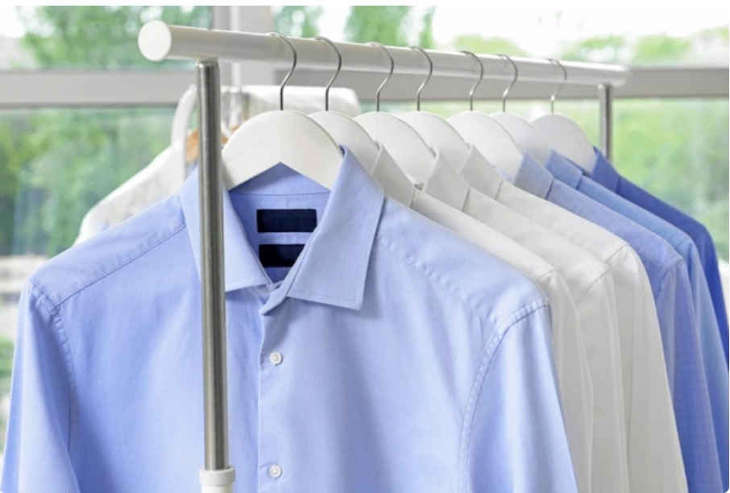
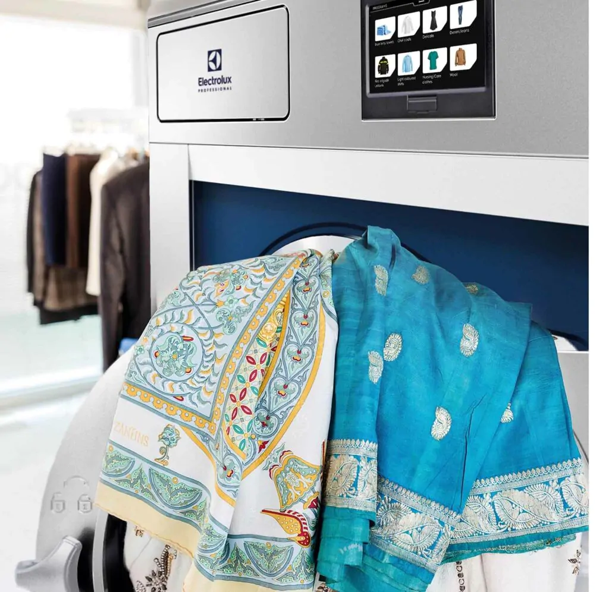
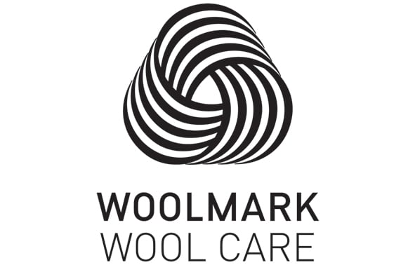
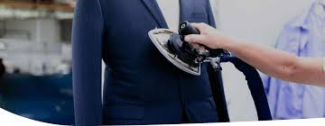
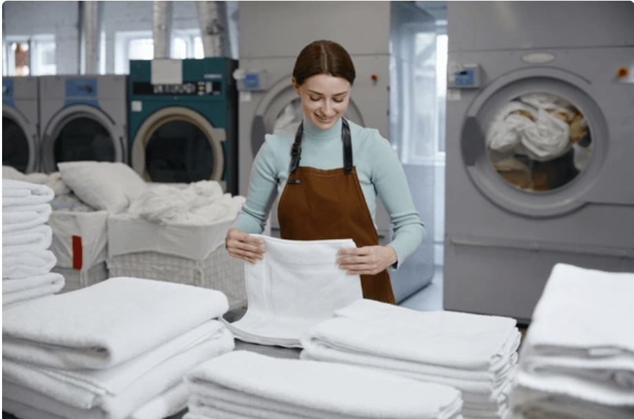
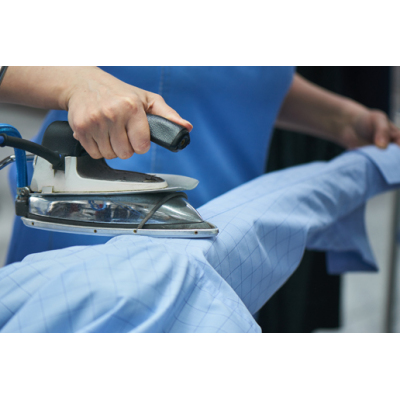
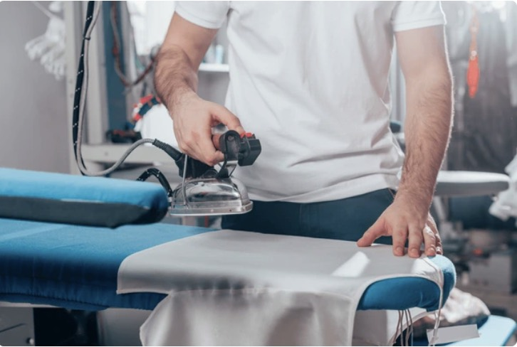

Expert care for delicate textiles
Controlled processing for wool, silk, cashmere and delicate garments labeled dry clean only.
Beylikduzu | Organic Dry Cleaning | Delicate Garment Care
We provide fabric-respectful, delivery-ready professional care for suits, coats, bridal gowns, leather, suede, fur and delicate garments.
At Greenlux, dry cleaning, organic wet clean, stain pre-treatment, ironing-finishing and home textile cleaning are managed within one professional service flow. Electrolux Lagoon Professional wet clean technology supports this care standard as our technical backbone.


Controlled processing for wool, silk, cashmere and delicate garments labeled dry clean only.
Store Location
Marmara Mah. Yurt Cd. No:20/2-2 Dekar Asmali Shops, Beylikduzu - IstanbulAn organic, environmentally conscious care approach free from carcinogenic solvents
Water is the main cleaning medium; supporting products are selected for their biodegradable profile

Electrolux Lagoon programs stand out with a confidence-building approval emphasis for delicate wool garments
Greenlux service areas
Greenlux does not limit its organic dry cleaning standard to single-garment care. Outerwear, delicate textiles, home textiles, tailoring-alteration, ironing-finishing and high-volume textile needs are managed within one professional service discipline based on planned intake, controlled processing and careful delivery.
The categories below summarize the service areas most frequently requested at Greenlux. In each of them, the goal is not only cleaning but also a professional care standard that protects fabric life, structural form and day-to-day usability.
Controlled care programs are applied for suits, jackets, trousers, coats, overcoats, bridal gowns, leather, suede, fur and delicate garments. At Greenlux, organic dry cleaning focuses not only on cleanliness but also on preserving shape, texture and delivery presentation.
Suitable cleaning solutions are used according to the upholstery structure of home and office sofas, aiming for surface freshness, improved usage comfort and a more orderly appearance without overworking the fabric.
Carpets are deep-cleaned in 8-brush fully automatic carpet washing machines. Before packaging, dust and residue load are reduced through beating machines, followed by orderly packaging and professional delivery preparation.
Professional ironing and finishing are provided for shirts, trousers, dresses and daily textiles to create a clean, defined and delivery-ready appearance. This is especially important for a neat corporate presentation standard.
Trouser hemming, waist resizing, sleeve and skirt length adjustment, zipper replacement, button sewing, seam repair, lining repair and measurement-based garment alterations are planned after product assessment. This service supports a more polished delivery standard together with cleaning and finishing.
In high-volume textile needs, intake, sorting, washing planning and delivery organization are managed in a controlled way. This service is structured to support operational continuity for businesses and clients with regular textile flow.
Daily textiles are handled through washing, drying, folding and delivery preparation within a regular laundry flow. This service is a strong solution for customers seeking practical, time-saving and professionally managed textile care.
Roller blinds are cleaned on dedicated roller blind cleaning tables with detergents selected for the fabric structure. This controlled approach is designed to protect mechanical function, surface quality and day-to-day usability.
Sheer curtains, drapes and different curtain groups are cleaned with controlled programs matched to their fabric structure. The aim is to provide a curtain care standard that returns them to use in a cleaner, more orderly and presentation-ready condition.



Brand position
In the wet clean approach used at Greenlux, water is the primary cleaning medium, while the process is managed through computer-monitored machines, biodegradable supporting products and controlled drying steps. In solvent-based dry cleaning systems, PERC, hydrocarbons and similar chemical solvents are part of the process. That core difference helps us aim for a lighter scent, a softer hand-feel and a more balanced care result on suitable delicate textiles.
Greenlux applies this approach not simply as an equipment choice, but as an operating standard focused on protecting garment life, reducing environmental load and building customer confidence. Where suitable, wet clean offers a more modern and attentive alternative to solvent systems through careful stain pre-treatment, controlled drying and clean finishing steps.
Wet clean and Lagoon technology
At Greenlux, wet clean is not just a machine program but a professional care approach chosen according to fabric structure. Electrolux Lagoon Professional supports this approach as the technical backbone that allows washing, drying and finishing to be managed with more control.
Wet clean offers a more controlled and more thoughtful care alternative for suitable wool, silk, cashmere and dry-clean-only delicate garments when compared with classical solvent-based systems. At Greenlux, the goal is not only to remove soil but to protect the shape, texture and long-term usability of the item.
In the Greenlux care model, technology, fabric protection and wearer experience are evaluated together.
The wet clean approach creates a fresher, lighter result without the unpleasant odor associated with solvents.
Thanks to computer-controlled motion, temperature and drying balance, it can provide more controlled care than hand washing.
It aims to clean deeply while helping preserve the fabric, keep colors lively and maintain a balanced texture.
On suitable textiles, proper pre-treatment and stain analysis help the cleaning process move forward in a more controlled and effective way.
Because the process does not generate hazardous waste, it supports a more thoughtful choice for both the environment and worker wellbeing.
Electrolux Lagoon Professional forms the controlled process backbone behind the Greenlux wet clean standard.
Because water and biodegradable support products are central to the process, a fresher care experience is targeted.
The confidence associated with delicate wool care adds an additional quality reference to the technical side of the service.
Drying, ironing and final presentation control are treated as an essential part of the Greenlux care standard.
Process flow
Not every item is processed in the same way. The success of organic wet clean depends on the right intake, the right program, the right drying method and a careful quality-control chain.
Fabric type, stain structure, care label information and sensitivity level are evaluated together; when needed, stain pre-treatment is planned.
The appropriate Lagoon program is selected for the item, and the balance of water, movement and time is adjusted accordingly.
Computer-controlled dryers help preserve the garment's form and deliver a cleaner feel.
The final look, smell, texture and presentation quality are checked before the item is prepared for delivery.

Frequently asked questions
No. Wet clean is more complex and specialized than regular laundry. Computer-controlled machines, the right cleaning products and controlled drying are used to achieve professional results.
Wool, silk, cashmere and other delicate garments are strong candidates for wet clean. Some delicate items labeled dry clean only can also be cared for safely with suitable programs.
Because PERC and similar solvents used in traditional dry cleaning can create risks for the environment and worker health when not managed properly. Wet clean stands out as a water-based, safer and more environmentally conscious alternative.
No. The type of stain, the fabric structure and how long the stain has remained on the item all affect the result. At Greenlux, the fabric and stain type are assessed first, then the right pre-treatment is planned to achieve the best result without harming the garment.
Google reviews
Real customer feedback shared on Google highlights how Greenlux performs in stain removal, wedding dress care, duvet cleaning and overall service consistency.
“Acrylic paint had dried on our TNF jacket. About 99% of it was removed. You can choose them with confidence for stubborn stains.”
“We had our wedding dress and groom suit cleaned and were very pleased. If you are looking for a solution for delicate fabrics and stubborn stains, I definitely recommend stopping by.”
“I handed in a wool duvet. The price was very good compared with the market, and the service was warm and welcoming.”
“Very good, very clean.”
Greenlux contact desk
Greenlux serves from an accessible location within Dekar Asmali Shops in Marmara District.
Reach our team directly for intake updates, delivery status, pricing information and service guidance.